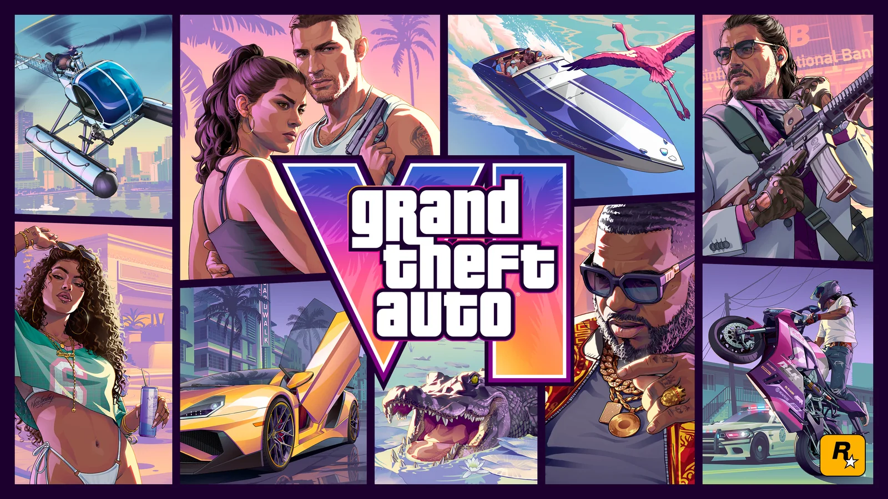

Videojuegos
Videojuegos esperados: cómo seguir los próximos lanzamientos sin fechas inventadas
Una guía para vigilar calendarios de videojuegos y distinguir ventanas confirmadas de rumores y anuncios antiguos.
Novedades, juegos y guías para las consolas y servicios Xbox.
Lectura destacadaUna guía para vigilar calendarios de videojuegos y distinguir ventanas confirmadas de rumores y anuncios antiguos.
Ordenadas por última actualización. Cada artículo muestra la fecha de revisión.

Grand Theft Auto VI llegó el 19 de noviembre de 2026. Repasamos su historia, Leonida, personajes, plataformas y las preguntas que siguen abiertas.

Comparación práctica de PS5 y Xbox Series X|S según biblioteca, servicios, almacenamiento, amigos y presupuesto regional.
De fútbol y baloncesto a carreras y skate: juegos deportivos para distintos estilos, plataformas y niveles de simulación.

Recomendaciones para Xbox Series X|S y el ecosistema Xbox, con estilos variados y recordatorio de comprobar plataforma y catálogo.

Juegos para dos con estilos diferentes: campañas cooperativas, partidas locales, estrategia y competición amistosa.

Selección de juegos cooperativos con distintos ritmos, tamaños de grupo y formas de coordinarse, explicada con criterios editoriales.
Explora la biblioteca por tema y formato.

Una selección histórica de consolas por su biblioteca, diseño y efecto en la industria, no por potencia actual ni ventas aisladas.

Alternativas a Grand Theft Auto según lo que buscas: conducción, libertad, crimen, exploración o una ciudad llena de historias.

Mundos, campañas y juegos rejugables que pueden acompañarte durante mucho tiempo, con criterios para valorar si el contenido merece la pena.

Plataformas oficiales de GTA VI, diferencia entre edición nativa y juego en la nube y qué revisar antes de instalar.

Guía para escoger consola al calcular coste total, biblioteca, accesorios y servicios, sin depender de precios que cambian por región.

Comparamos el planteamiento, el escenario y el lanzamiento de GTA VI con GTA V sin atribuir funciones no verificadas.

Juegos free-to-play recomendables y una guía clara sobre temporadas, compras opcionales y acceso online.
Una selección de juegos sociales para sofá y online, con notas sobre cross-play y tamaño de grupo.

Diez juegos con narración memorable y estilos diversos, seleccionados por construcción de personajes y ritmo.

Una selección de supervivencia para jugar en solitario o en grupo, con diferencias de tono y exigencia.

Ocho juegos de terror con enfoques distintos, desde supervivencia y exploración hasta multijugador cooperativo.

Una selección editorial de antagonistas memorables por motivación, presencia y relación con el jugador.
Franquicias con identidades fuertes que han sabido evolucionar entre generaciones y formatos.